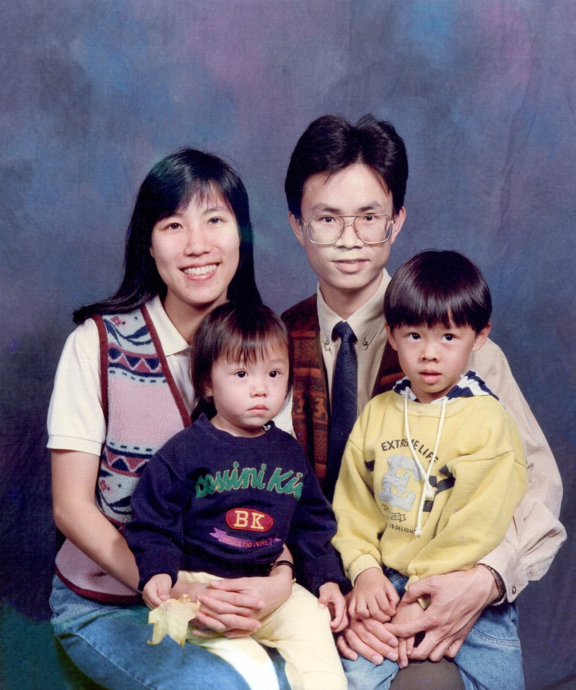
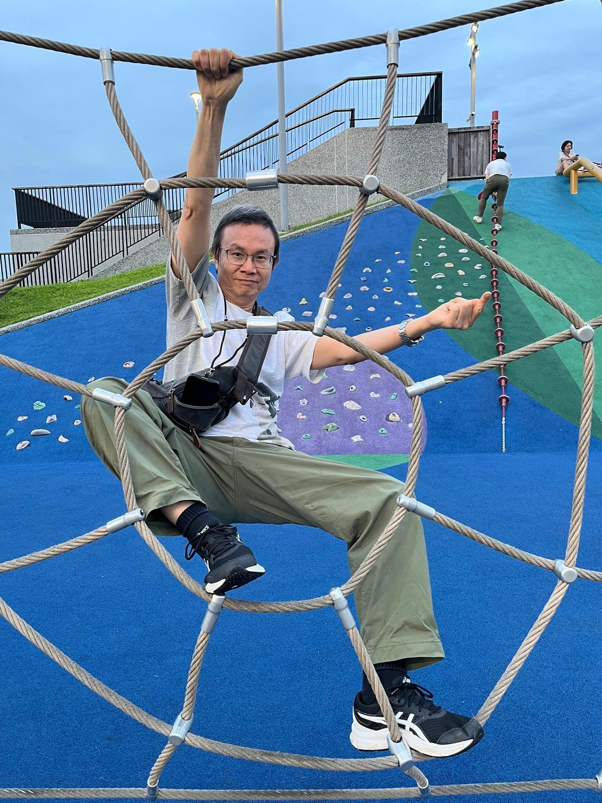
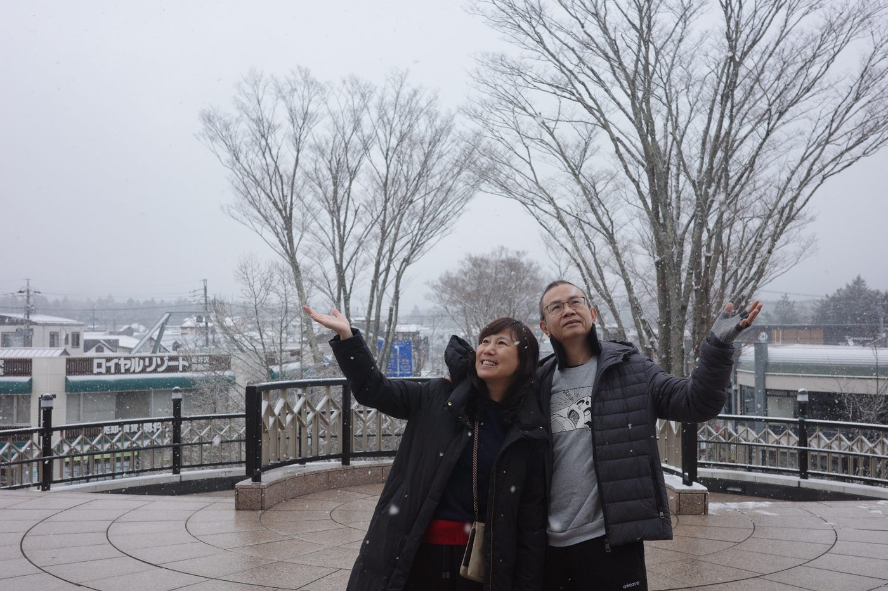
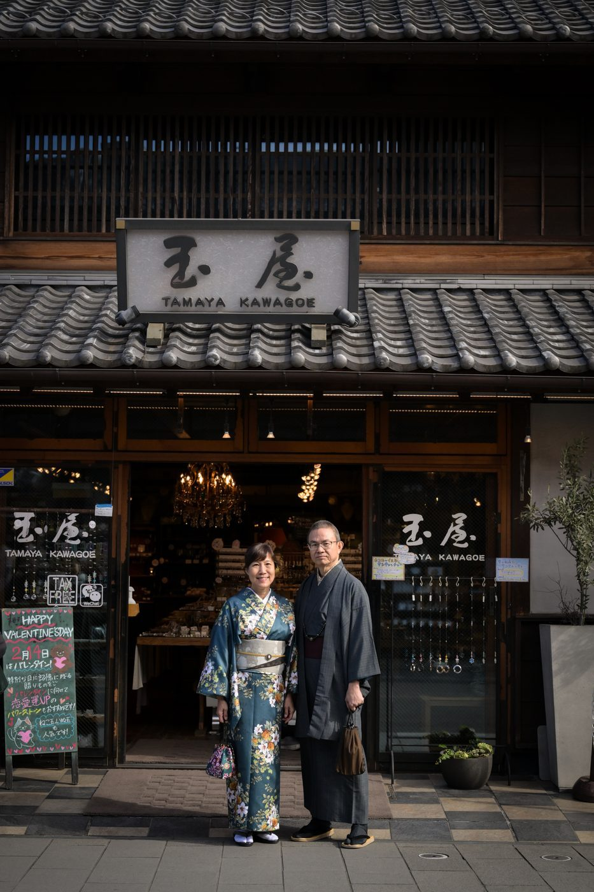
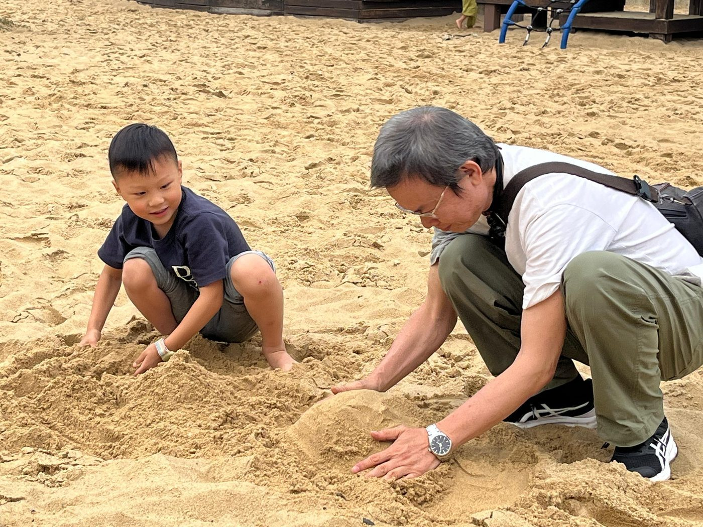
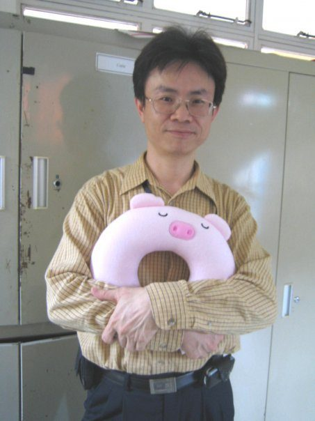

訃文
Obituary訃 聞
不孝長男殷正率家人泣告：先父謝公諱純昌府君，平生剛正自持，待人以誠；與友相交，重信講義，古道熱腸；為夫為父，愛深且久，凡事默然肩承，家人皆知其心底溫厚。
先父畢生執教杏壇，春風化雨，作育英才。治學與處事皆一絲不苟，凡事力臻完美；胸懷文人風骨，儒雅書卷氣與立身責任感並存。講堂之上，傾囊相授、誨人不倦，是學子敬重愛戴的「謝老師」；家庭之中，與家母相知相惜，悉心撫育一子一女，是處處疼惜妻子、一生牽掛兒女的慈父。
二〇二四年初癌疾復發，先父仍堅毅面對，積極求治，不改其志；其間與家人遊歷四方，惜取相聚時光。其後亦曾居澳洲，安享退休歲月，與多年故交重逢，暢敘平生；及至今年九月，喜見幼孫誕生，共享天倫。先父此生圓滿，面對病患堅韌不屈，在至親摯愛守護之下，從容走完人生最後一程，於二〇二六年十月二十七日晚上八時安詳辭世，享年六十七歲。兒輩當永懷其為師、為友、為父之風範，銘記於心，不敢或忘。
茲定於（設靈日期待補）假沙田賽馬會善寧之家設靈，並依佛道儀式治喪；（出殯日期待補）出殯。哀此訃聞。
不孝長男 殷正 率家人 泣血稽顙
治喪資訊
Service
場地
沙田賽馬會善寧之家
設靈／出殯日期與時間待確認後補上。
禮儀
佛道
破地獄等細節，請先向善寧之家查詢確認。
年表
Timeline依歲月先後排列。左側為時期或年份；說明由家人修訂。
-
童年時光

兄父 -
青春歲月

瀟灑倜儻 -
立志於學

港大畢業 -
走萬里路

遊歷中華 -
三十而立

新婚留影 -
修身齊家

為人父初抱稚子 -
誨人不倦

執教歲月 -
春風化雨

桃李滿門 -
耳順之年

弄孫為樂 -
環遊世界

皇后鎮水畔 -
從心所欲

家庭之樂 -
頑疾復發

積極抗癌 -
退休時光

雪梨歌劇院前 -
2024

雪地歡聚 -
2024

川越和服留影 -
2024

川越和服留影 -
2025

海闊天空 -
2025

石灘奔跑 -
2025

沙丘滑沙 -
2026

喜抱新生男孫 -
2026安息 · 詳見治喪資訊。
相冊
Gallery





留言牆
Memory wall此處預留給親友追思留言。樣本頁暫未接表單；若需要，我可以再加留言功能。